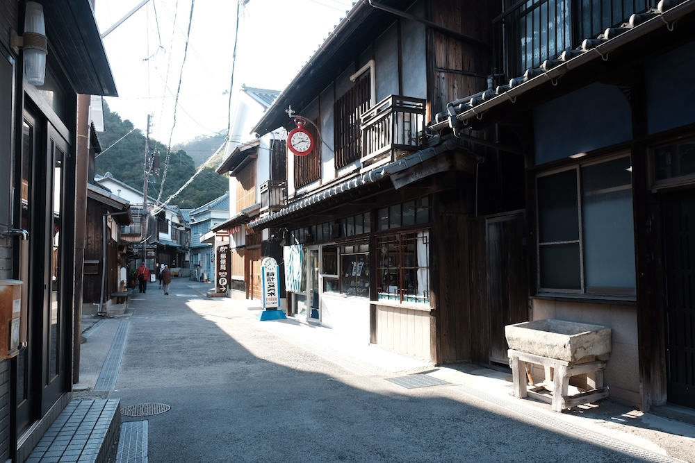
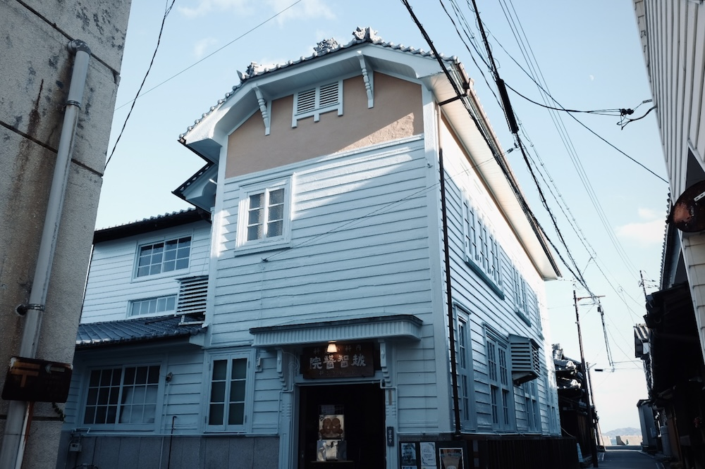
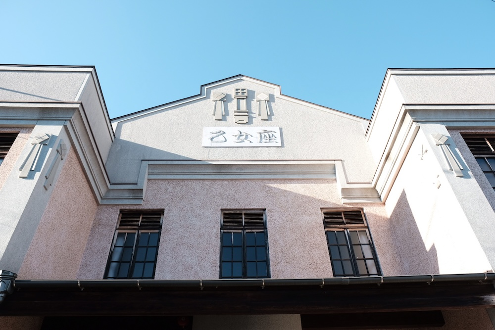
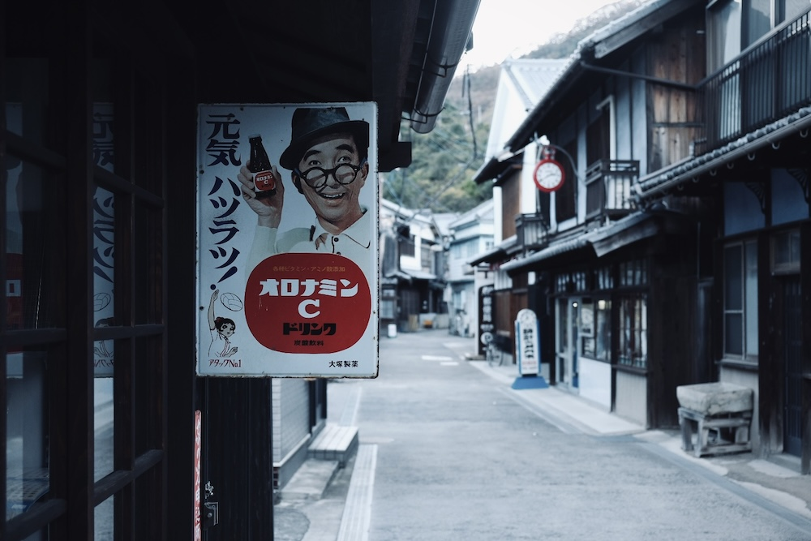
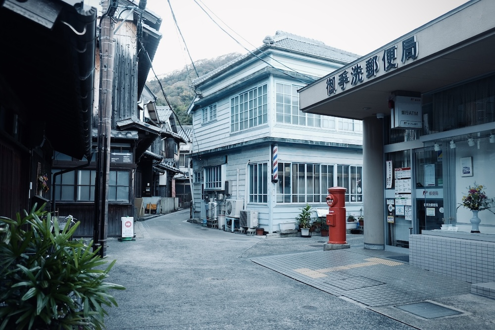
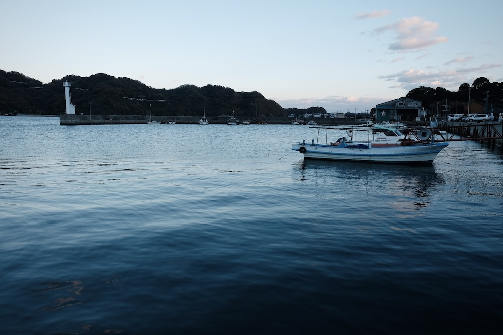
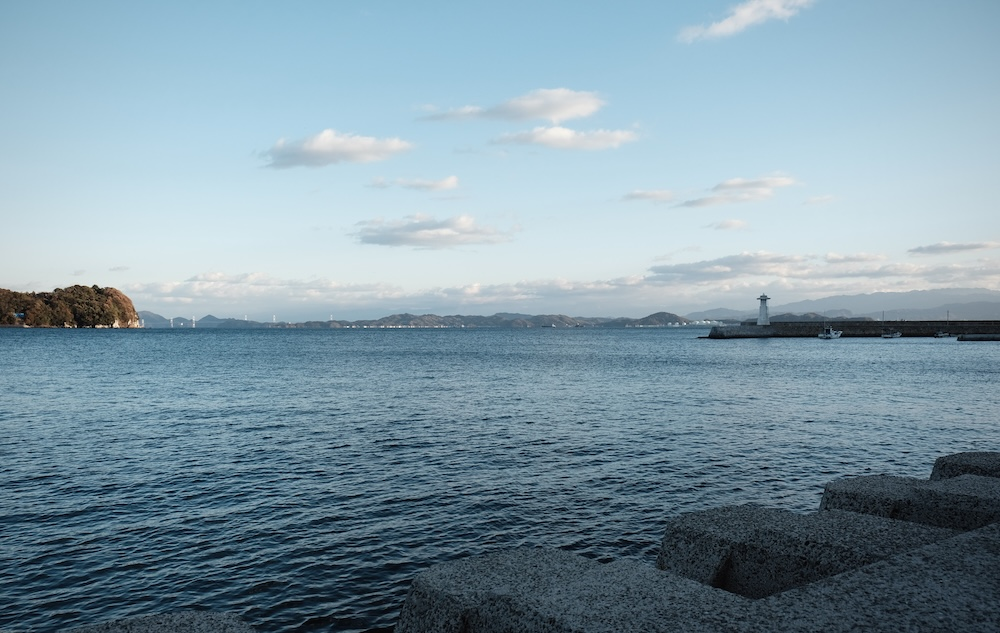
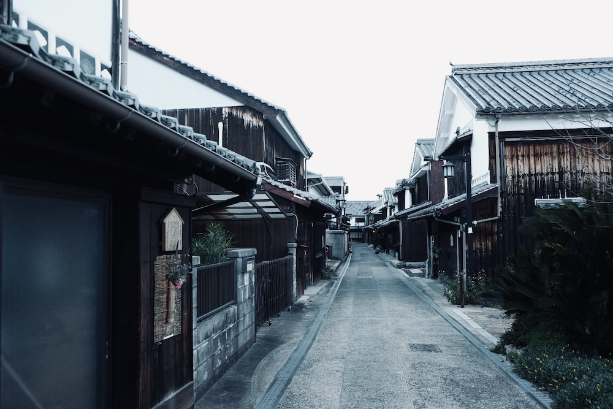

探訪:2025, 撮影:Fujifilm X-T2
大崎下島の最東端、岬に張り出すようにして形成された江戸時代〜明治時代の街並み。帆船の時代、北前船が潮流が変わるまで滞在する「風待ち・潮待ちの港」として栄えた歴史を持つが、船がディーゼル機関となってからは風待ちのために寄港する理由もなくなり、古い街並みが瞬間冷凍的に保存されることとなった。
街並みには重厚な石垣や日本家屋のほかに、洋館意匠を凝らした劇場や商店、医院など近代建築が多数みられる。
御手洗の風景







